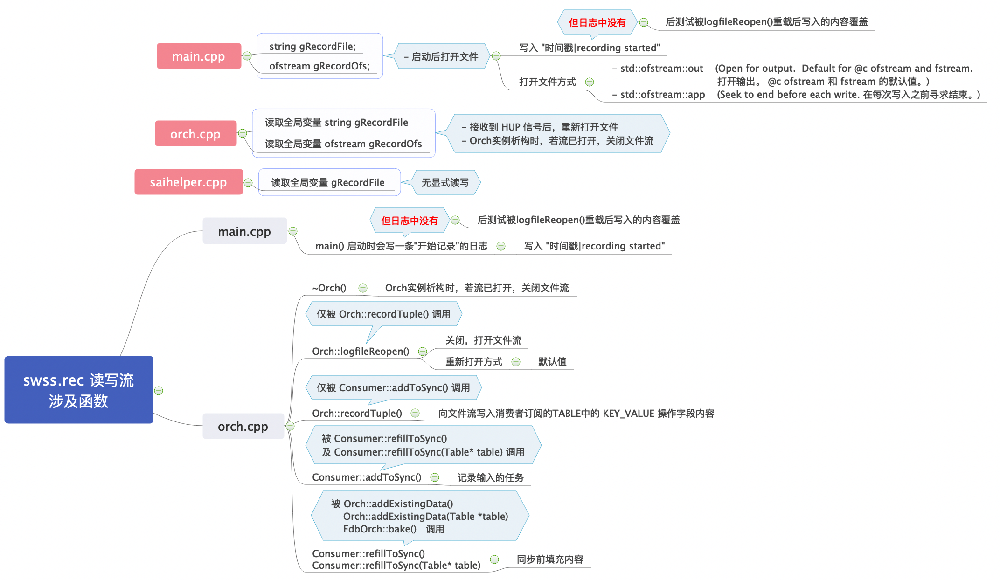

sonic201911 丢失 swss.rec 历史日志问题及修复
1. 问题描述
sonic版本：201911
发现问题： swss.rec 无轮转文件
2. 问题分析
2.1. 问题定位
/var/log/swss/swss.rec 文件存在被其他未知程序误删或覆盖的操作
2.2. 问题可能性分析
- 怀疑被其他未知程序或脚本误删或覆盖。
通过lsof /var/log/swss/swss.rec命令观测读写swss.rec文件的进程，仅发现 orchagent 及 轮转时 logrotated 进程，而同路径sairedis.rec正常，且测试swss.rec轮转正常，排除。 - 怀疑为 Docker 同步问题。
/var/log/swss/ 路径为 swss 容器（rw形式）挂载宿主机同路径文件夹，怀疑可能同步问题导致，但同路径sairedis.rec正常，排除。 - 怀疑 orchagent 进程未正常关闭、重启可能导致正在打开的
swss.rec内容丢失。
但相似模式的sairedis.rec无此问题，排除。 - 怀疑 orchagent 进程对
swss.rec读写业务流程中与sairedis.rec存在差异的地方导致的此问题。
分析源码 swss.rec 读写流涉及函数，发现 main.cpp 中必打的日志丢失。 - 怀疑 “pgrep -x orchagent | xargs /bin/kill -HUP 2>/dev/null || true” 触发 Orch::logfileReopen() 后，文件打开方式为默认，可能会覆盖之前内容。
swss.rec 与 sairedis.rec 重载参数对比：
2.2.1. 测试 logfileReopen() 函数调用前后 swss.rec 文件变化
分析：给 orchagent 发送 HUP 信号，触发重载 swss.rec 文件后，后续写入的新内容将覆盖历史日志，造成日志丢失。
2.2.2. 测试重载流程中的关键函数 open() 是否携带参数造成的差异
这也是 swss.rec 与 sairedis.rec 两个文件重载中的主要差异点。
由测试结果可知：
- 默认无参 open() 打开文件将覆盖旧内容，造成历史日志丢失。
- 而带 out 及 app 参数的 open() 打开文件将采用追加形式写入新内容，历史内容会被保留。
- ofstream::out，Open for output. Default for @c ofstream and fstream.
- ofstream::app，eek to end before each write.
2.2.3. 根因总结
上述分析可知根因为： swss.rec 的重载函数中 open() 未携带 out 及 app 参数，导致后续内容覆盖了历史日志，造成日志丢失。
2.3. 问题影响
- 问题后果：造成
swss.rec日志记录丢失，影响排障定位。 - 触发条件：orchagent 在未达到轮转阈值前，就被误发送 HUP 信号问题“概率”引发），进而导致 orchagent 采用“覆盖”open()的形式打开
swss.rec，进而导致该文件的历史日志丢失。
3. 解决方案
在 swss.rec 的重载函数中调 open()处增加 out 及 app 参数，使其以追加形式写入后续日志，以保留历史日志。改动如下：
src/sonic-swss/orchagent/orch.cpp 的重载函数Orch::logfileReopen()，在调用 open()函数处增加 out 及 app 参数：
1 | gRecordOfs.open(gRecordFile, std::ofstream::out | std::ofstream::app); |
修复后换包自问题已修复， swss.rec 历史日志不再丢失。
相关文章